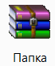

Как архивировать папки и файлы
В этом уроке я покажу, как заархивировать папку или файл на компьютере. Расскажу, что такое архиватор и где его бесплатно скачать, как архивировать при помощи программ WinRAR и 7Zip.
Что такое архиватор
Архиватор – это такая специальная программа, при помощи которой можно архивировать файлы (папки с файлами) и доставать их из архива. Другими словами, это та программа, которая помогает сжимать файлы, а также упаковывать их для более удобной пересылки по электронной почте.
Сейчас мы проверим, есть ли такая программа на Вашем компьютере. Для этого откройте любую папку, например, «Документы» или «Локальный диск D». Нажмите правой кнопкой по любому файлу или любой папке внутри.
Если в списке среди прочего будет пункт «Добавить в архив» (Add to archive) или пункт «7 Zip», то программа-архиватор на Вашем компьютере имеется. А если ничего похожего Вы не видите, то, скорее всего, на компьютере ее нет.
Как и большинство программ, архиваторы бывают платные и бесплатные. То есть те, которые можно легально и совершенно бесплатно скачать из интернета и установить к себе на компьютер, и те, за которые нужно платить деньги. Если, когда Вы проверяли, установлена ли на компьютере такая программы, Вы увидели пункты, которые начинаются со слов «Добавить в архив» (или «Add to»), то на компьютере установлен архиватор. Называется он WinRaR.
WinRaR - это прекрасная, очень удобная программа, но, увы, она может быть платная. Если она есть на Вашем компьютере, то тут два варианта: либо за нее не нужно платить и можно пользоваться сколько угодно, либо через какое-то время она перестанет работать. Чуть позже мы это проверим. И если окажется, что у Вас «неполноценный» вариант, то имеет смысл скачать и установить бесплатный архиватор 7 Zip.
А если же при проверке Вы нашли у себя пункт 7 Zip, то на компьютере установлен бесплатный архиватор.
Скачать 7Zip можно бесплатно с официального сайта 7-zip.org. После загрузки запустите файл и установите программу. Она полностью бесплатная.
Как архивировать папки и файлы в WinRaR
А теперь перейдем к практике. Сейчас мы научимся сжимать файлы и папки при помощи программы WinRaR. Если на Вашем компьютере установлена программа 7 Zip, то смело опускайтесь ниже - там информация для Вас. Если же у Вас нет ни того ни другого, то еще ниже :)
Для начала научимся архивировать файлы и папки. Делается это очень просто. Нажмите правой кнопкой мышки по файлу или папке с файлами. Появится вот такой список.

Как Вы уже догадались, нас интересуют пункты, которые начинаются со слов «Добавить в архив» (Add to).
Нам нужен второй пункт из этой серии. У меня он называется «Добавить в архив ...». У Вас будет почти такой же пункт, только будет написано название Вашего файла (папки) .rar.
Нажмите на этот пункт. Возможно, на некоторое время появится вот такое окошко. Дождитесь, пока оно пропадет.

А теперь посмотрите внимательно на файлы и папки. Должен появиться новый файл. Он будет выглядеть примерно так:
Вот это и есть тот файл или та папка, которую Вы заархивировали.
А теперь давайте посмотрим, насколько уменьшился размер. Нажмите правую кнопку мышки на файле или на папке, которую Вы сжимали. Из списка выберите пункт «Свойства».
Появится новое окошко. Запомните размер и закройте его.
Теперь нажмите правой кнопкой по новому файлу-архиву и выберите пункт «Свойства».

Скорее всего, его размер будет меньше, чем размер изначального файла (папки).

Но так бывает не всегда. Например, если Вы будете таким образом сжимать фотографии, видео или музыку, размер может остаться прежним или измениться совсем незначительно. Для сжатия фото, музыки и видео используются другие программы, не архиваторы.
А теперь научимся разархивировать, то есть доставать из архивов информацию.
Вообще-то, можно этого и не делать. Попробуйте просто открыть файл-архив. Внутри Вы увидите то, что было заархивировано. И оно совершенно спокойно открывается. Но все-таки это не очень удобно. Поэтому лучше все-таки вытаскивать информацию из архива.
Перед тем, как достать из файла-архива информацию, откройте его.
Откроется необычное окошко. Посмотрите в его середину – там показаны файлы или папки, которые прячутся в архиве. То есть, если мы его разархивируем, то эти файлы (папки) «вылезут» наружу.
Закройте окошко и нажмите правой кнопкой мышки по этому файлу. Нас интересуют два похожих пункта – «Извлечь в текущую папку» (или «Extract Here») и «Извлечь в какое-то название» (или «Extract to какое-то название»).
Если, когда Вы открывали архив, в середине окошка был один файл или одна папка, то нажимайте «Извлечь в текущую папку» (Extract Here). А если там было несколько файлов (папок), нажимайте «Извлечь в какое-то название» (Extract to какое-то название).
Вот и все. После того, как Вы нажмете на нужный пункт, файлы или папки извлекутся, и архив можно будет удалить.
А теперь давайте узнаем, какая у Вас версия программы WinRaR – та, которая со временем перестанет работать, или же та, которая будет работать постоянно.
Для этого нам нужно открыть любой файл-архив. Когда он откроется, в этом окошке нажмите на надпись «Справка» или «Help» (вверху) и из списка выберите пункт «О программе» (About...).
Появится небольшое окно. Если в нем написано «40-дневная пробная копия» (40 days trial copy), то это означает, что Ваша программа в ближайшем будущем перестанет работать. Имеет смысл скачать бесплатную программу для архивации (об этом читайте ниже).
А если в этом окошке написано «Владелец копии» или «Registered to», то программа будет работать – можно не беспокоиться, ничего не скачивать. И дальше читать тоже необязательно.
Как заархивировать папку и файл в 7-Zip
На Вашем компьютере установлен бесплатный архиватор (о том, как это определить, было сказано чуть выше). Называется он 7-Zip. И сейчас мы научимся им пользоваться.
Для начала научимся архивировать файлы и папки. Делается это очень просто. Нажмите правой кнопкой мышки по файлу или папке с файлами. Появится вот такой список.
Нас интересует пункт 7-Zip. Наведите на него. Появится дополнительный список. В этом списке нас интересует только один пункт, в моем примере он называется «Добавить к “Папка.zip”» (Add to “Папка.zip”).
У Вас вместо «Папка.zip» будет другое название, но тоже с окончанием .zip
Нажмите на этот пункт. Возможно, на некоторое время появится вот такое окошко. Дождитесь, пока оно пропадет.
А теперь посмотрите внимательно на файлы и папки. Должен появиться новый файл. Он будет выглядеть примерно так:
Вот это и есть тот файл или та папка, которую Вы заархивировали.
Теперь посмотрим, насколько уменьшился размер. Нажмите правую кнопку мышки на файле или на папке, которую Вы сжимали. Из списка выберите пункт «Свойства».
Появится новое окошко. Запомните размер и закройте его.

А теперь нажмите правой кнопкой по новому файлу-архиву и выберите пункт «Свойства».
Скорее всего, его размер будет меньше, чем размер изначального файла (папки).
Но так бывает не всегда. Например, если Вы будете таким образом сжимать фотографии, видео или музыку, размер может остаться прежним или измениться совсем незначительно. Для его уменьшения используются совсем другие программы.
А теперь научимся разархивировать, то есть доставать файлы и папки.
Вообще-то, можно этого и не делать. Попробуйте просто открыть архив. Внутри Вы увидите файлы и папки, которые были в него добавлены. И они совершенно спокойно открываются. Но все-таки это не очень удобно. Поэтому лучше вытаскивать информацию из архивов. Ведь в любой момент можно будет вернуть ее обратно, так, как мы это делали выше.
Перед тем, как достать из файла-архива информацию, откройте его.
Откроется необычное окошко. Посмотрите в его середину – там показаны файлы или папки, которые прячутся в архиве. То есть, если мы его разархивируем, то эти файлы (папки) «вылезут» наружу.
Закройте окошко и нажмите правой кнопкой мышки по этому файлу. В списке наведите на пункт «7-Zip». Появится дополнительный список. Нас интересуют два похожих пункта – «Распаковать здесь» (Extract Here) и «Распаковать в какое-то название\» (Extract to какое-то название\).
Если, когда Вы открывали архив, в середине окошка был один файл или одна папка, то нажимайте «Распаковать здесь» (Extract Here). А если там было несколько файлов (папок), то «Распаковать в какое-то название\» (Extract to какое-то название\).
Вот и все. После того, как Вы нажмете на нужный пункт, файлы или папки достанутся, и архив можно будет удалить.